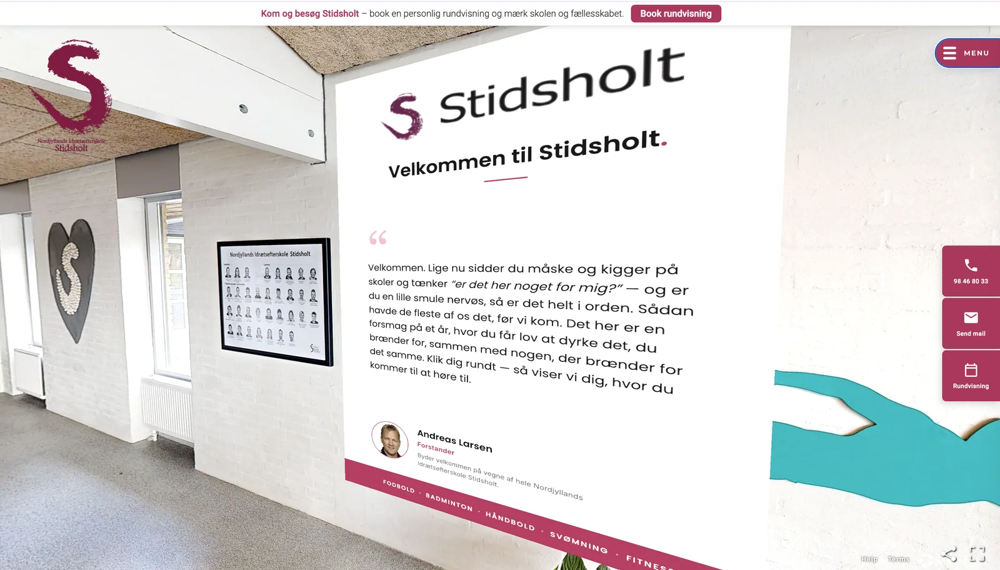
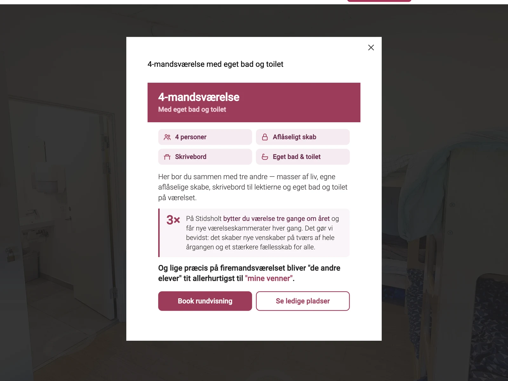
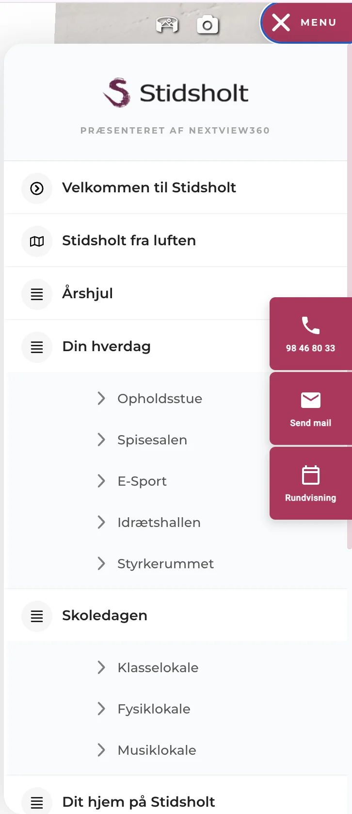

Virtuel rundvisning
Stidsholt Efterskole
Nordjyllands Idrætsefterskole
En virtuel rundvisning, der følger eleven hele vejen. Fra første klik på hjemmesiden til første uge på skolen.
Én rundvisning. Hele elevrejsen.
At vælge efterskole er en stor beslutning, både for den unge og for forældrene. Mange bor langt fra skolen og når kun at besøge den én gang, hvis overhovedet.
Derfor har vi bygget en rundvisning af Stidsholt, der ikke kun ligger på hjemmesiden. Den er lavet til at blive brugt gennem hele forløbet: når eleven læser om skolen første gang, når familien skal beslutte sig, og når den nye elev skal falde til.
- Kunde
- Stidsholt Efterskole
- Sted
- Ved Sæby, Nordjylland
- Leverance
- Virtuel rundvisning, drone og eget menudesign
- Menu
- Velkomst, årshjul, hverdag, skoledag og hjem
- Boliger
- Sommerhus, Hus 1 og Hus 2
- Forløb
- Fra hjemmeside til første skoledag
Touren indefra
Mere end billeder
Rundvisningen er bygget som en oplevelse, der guider eleven og forældrene gennem skolen. Den fortæller en historie, den er interaktiv, og den skaber tillid.

01Fortæller en historie
Touren starter med et velkommen, ikke med en gang
Første stop er forstanderen, der byder velkommen direkte på væggen i touren. Teksten møder den unge, hvor de er: “er det her noget for mig?”
Derfra går historien videre gennem årshjulet, hverdagen, skoledagen og elevernes hjem. Man går ikke bare rundt i rum. Man får fortalt, hvordan det er at gå på Stidsholt.

02Interaktiv
Klik på et værelse, og læs om livet der
Infopunkter i hvert rum åbner korte kort med fakta og stemning. På 4‑mandsværelset står der, hvor mange der bor der, at der er eget bad og aflåseligt skab, og at eleverne bytter værelse tre gange om året.
Hvert kort slutter med Book rundvisning og Se ledige pladser, så den, der er blevet nysgerrig, kan tage næste skridt med det samme.

03Skaber tillid
En menu bygget efter forældrenes spørgsmål
Hvor skal mit barn bo? Hvordan ser en skoledag ud? Hvad laver de om aftenen? Menuen svarer i den rækkefølge, og telefon, mail og booking af rundvisning er altid synlige.
Skolens eget logo og farver gør, at touren føles som Stidsholt og ikke som en teknisk løsning. Det giver ro, både hos den unge og hos forældrene.
- Velkommen til Stidsholt
- Stidsholt fra luften
- Årshjul
- Din hverdag
- Skoledagen
- Dit hjem på Stidsholt
04Animation
Årshjulet: et år på Stidsholt på ét minut
Til touren har vi også lavet en animeret video, der viser hele skoleåret: skolestart, linjetur til La Santa, idrætsdag og galla. Måned for måned, med skolens egne billeder.
Den ligger under Årshjul i menuen og giver eleven et billede af, hvad et helt år byder på. Videoen kan også bruges på hjemmesiden, på messer og på sociale medier.
Kunderejsen
Sådan bruges touren gennem hele elevrejsen
Den samme rundvisning gør noget forskelligt, afhængigt af hvor eleven og forældrene er i beslutningen.
Trin 1 af 6
Eleven læser om skolen
Touren ligger ved linjefag, værelser og skolens hverdag på hjemmesiden. Den kommende elev kan gå fra opholdsstuen til spisesalen og videre til sit mulige værelse, i stedet for at bladre i billeder.
- Hjemmeside
Trin 2 af 6
Familien beslutter sig sammen
Linket kan sendes til forældre og bedsteforældre, så hele familien ser det samme hjemmefra. Menupunkterne "Ledige pladser" og "Bliv elev" ligger direkte i touren, så næste skridt er ét klik væk.
- Delelink
- SMS
Trin 3 af 6
Skolen bliver husket
Familier, der har været på hjemmesiden eller til åbent hus, kan mødes igen med annoncer, der linker direkte ind i touren. De genkender stedet og kan gå rundt igen, mens beslutningen bliver taget.
- Retargeting
Trin 4 af 6
Tryghed i månederne før
Når eleven har fået plads, kan touren sendes med i velkomstmails og nyhedsbreve. Eleven kan se sit hus og sit værelse, og forældrene ved, hvor deres barn skal bo.
- Velkomstmail
- Nyhedsbrev
- Forældreinfo
Trin 5 af 6
Find vej på skolen
Klasselokale, fysiklokale, musiklokale og spisesal ligger som punkter i touren. Nye elever kan bruge den på mobilen til at finde rundt de første dage.
- Mobil
- QR-kode
Trin 6 af 6
Messer og markedsføring
Touren kan vises på skærm eller tablet på efterskolemesser og deles med en QR-kode på brochurer og visitkort. Den samme optagelse arbejder videre år efter år.
- Messer
- Sociale medier
Forløbet
Fra første snak til levering
- 01
Planlægning
Menu, rute og rum aftalt med skolen, så optagelsen passede ind i skolens hverdag.
- 02
Optagelse
Indendørs i skarp 4K og udendørs med drone, så man ser hele området.
- 03
Menu og tekster
Egen menu og infopunkter med tekster, der giver stemning og tryghed.
- 04
Levering og deling
Ét link til hjemmeside, Google, mails, annoncer og QR-koder.
Er I også en efterskole?
Vi bygger rundvisninger til efterskoler og højskoler i hele landet, så nye elever og forældre kan se skolen, før de vælger.